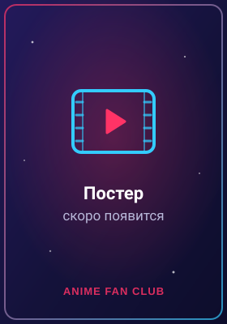

К сожалению, ничего не найдено... 🥋

Школа Элис
Школа с особыми способностями, дружба и тайны.

Спецкласс А
Соперничество, элитные классы и романтика.

Не сдавайся!
Девушка становится актрисой, чтобы отомстить.

Сакура, собирательница карт
Магические карты, школьная жизнь и доброта.

ReLIFE
Шанс прожить школьную жизнь заново.

Крутой учитель Онидзука
Учитель, который меняет жизни.

Класс убийц
Убить учителя, чтобы спасти Землю.

Безумный азарт
Азартные игры решают всё.

Класс превосходства
Манипуляции и борьба умов.

Ангельские ритмы!
Школа в загробном мире.

Другая
Проклятый класс и мистика.

Сайки Кусуо
Экстрасенс мечтает о покое.

K-On!
Музыка, дружба и школа.

Скейт: бесконечность
Подпольные скейт-заезды.